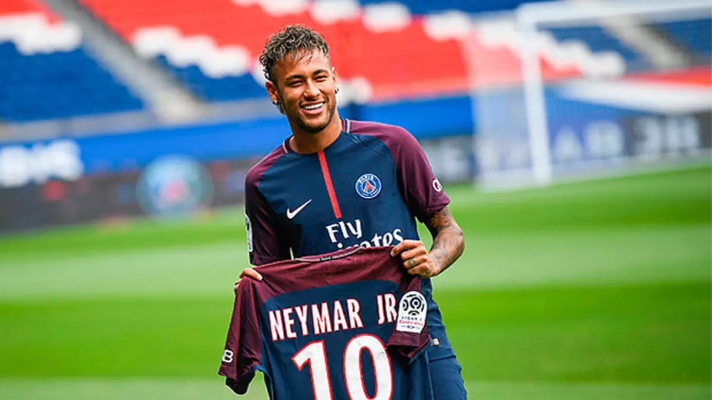

Neymar Jr. ingressou no Paris Saint-Germain em 2017, marcando o início de uma nova fase em sua carreira. Sua transferência recorde para o PSG estabeleceu novos padrões no mundo do futebol e o colocou no centro das atenções internacionais.
A chegada de Neymar ao PSG marcou um dos momentos mais significativos no mercado de transferências, com o jogador brasileiro buscando novos desafios e conquistas.
No PSG, Neymar se juntou a astros como Kylian Mbappé, formando uma dupla poderosa que elevou o status do clube no cenário europeu.
Em sua primeira temporada, Neymar contribuiu para a conquista da Ligue 1 e outros troféus nacionais, estabelecendo sua presença no futebol francês.
O talento de Neymar continuou a brilhar no PSG, com habilidades únicas, assistências e gols espetaculares que encantaram os fãs em todo o mundo.
Sua jornada no PSG é marcada por momentos memoráveis, contribuindo para o crescimento e sucesso contínuo do clube francês.
A passagem de Neymar pelo Paris Saint-Germain é um capítulo crucial em sua carreira, repleto de realizações e momentos emocionantes. Sua habilidade única e impacto no PSG continuam a ser uma parte fundamental da narrativa do futebol contemporâneo.Sua passagem também foi marcada por muitas brigas internar no clube, pois outro jogador queria oque o Neymar tinha, a atenção do clube e o favoritismo de todos, este mesmo jogador ameaçou sair do clube caso Neymar permanecesse no clube e eles nao deixarem ele ter escolha de jogadores para ter ao seu lado, inclusive expulsando Messi de seu time junto de Neymar